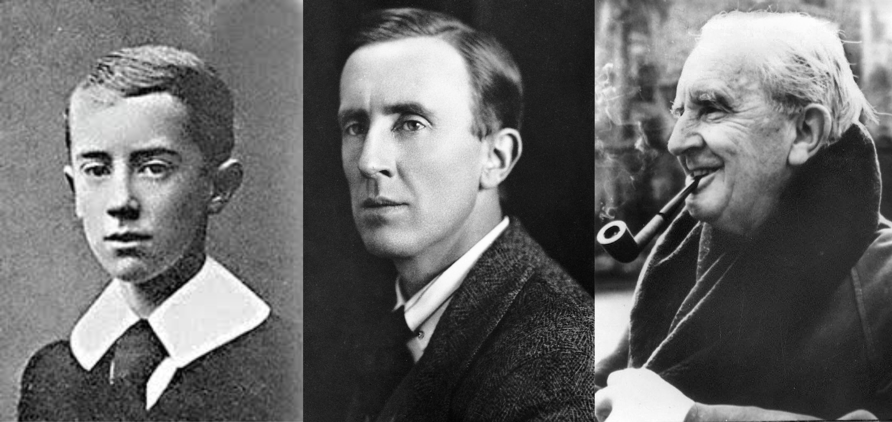
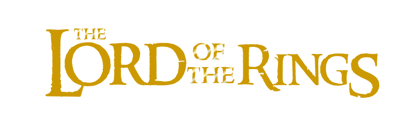

"One Ring to rule them all, One Ring to find them, One Ring to bring them all and in the darkness bind them."
J. R. R. Tolkien
John Ronald Reuel Tolkien, CBE FRSL, born 3 January 1892 – 2 September 1973 was an English writer, poet, philologist, and academic, best known as the author of the high fantasy works The Hobbit and The Lord of the Rings.
He served as the Rawlinson and Bosworth Professor of Anglo-Saxon and Fellow of Pembroke College, Oxford from 1925 to 1945 and the Merton Professor of English Language and Literature and Fellow of Merton College, Oxford from 1945 to 1959. He was a close friend of C. S. Lewis, a co-member of the informal literary discussion group The Inklings. Tolkien was appointed a Commander of the Order of the British Empire by Queen Elizabeth II on 28 March 1972.
After Tolkien's death, his son Christopher published a series of works based on his father's extensive notes and unpublished manuscripts, including The Silmarillion. These, together with The Hobbit and The Lord of the Rings, form a connected body of tales, poems, fictional histories, invented languages, and literary essays about a fantasy world called Arda and, within it, Middle-earth.[b] Between 1951 and 1955, Tolkien applied the term legendarium to the larger part of these writings.
While many other authors had published works of fantasy before Tolkien, the great success of The Hobbit and The Lord of the Rings led directly to a popular resurgence of the genre. This has caused Tolkien to be popularly identified as the "father" of modern fantasy literature—or, more precisely, of high fantasy.
Writing

Tolkien never expected his stories to become popular, but by sheer accident a book called The Hobbit, which he had written some years before for his own children, came in 1936 to the attention of Susan Dagnall, an employee of the London publishing firm George Allen & Unwin, who persuaded Tolkien to submit it for publication. When it was published a year later, the book attracted adult readers as well as children, and it became popular enough for the publishers to ask Tolkien to produce a sequel.

The request for a sequel prompted Tolkien to begin what became his most famous work: the epic novel The Lord of the Rings (originally published in three volumes in 1954–1955). Tolkien spent more than ten years writing the primary narrative and appendices for The Lord of the Rings, during which time he received the constant support of the Inklings, in particular his closest friend C. S. Lewis, the author of The Chronicles of Narnia. Both The Hobbit and The Lord of the Rings are set against the background of The Silmarillion, but in a time long after it.
Tolkien at first intended The Lord of the Rings to be a children's tale in the style of The Hobbit, but it quickly grew darker and more serious in the writing. Though a direct sequel to The Hobbit, it addressed an older audience, drawing on the immense backstory of Beleriand that Tolkien had constructed in previous years, and which eventually saw posthumous publication in The Silmarillion and other volumes. Tolkien strongly influenced the fantasy genre that grew up after the book's success.

Tolkien wrote a brief "Sketch of the Mythology", which included the tales of Beren and Lúthien and of Túrin; and that sketch eventually evolved into the Quenta Silmarillion, an epic history that Tolkien started three times but never published. Tolkien desperately hoped to publish it along with The Lord of the Rings, but publishers (both Allen & Unwin and Collins) declined. Moreover, printing costs were very high in 1950s Britain, requiring The Lord of the Rings to be published in three volumes. The story of this continuous redrafting is told in the posthumous series The History of Middle-earth, edited by Tolkien's son, Christopher Tolkien. From around 1936, Tolkien began to extend this framework to include the tale of The Fall of Númenor, which was inspired by the legend of Atlantis.
Tolkien appointed his son Christopher to be his literary executor, and he (with assistance from Guy Gavriel Kay, later a well-known fantasy author in his own right) organized some of this material into a single coherent volume, published as The Silmarillion in 1977. It received the Locus Award for Best Fantasy novel in 1978.
Legacy
Influence
While many other authors had published works of fantasy before Tolkien, the great success of The Hobbit and The Lord of the Rings led directly to a popular resurgence and the shaping of the modern fantasy genre. This has caused Tolkien to be popularly identified as the "father" of modern fantasy literature—or, more precisely, of high fantasy, as in the work of authors such as Ursula Le Guin and her Earthsea series. In 2008, The Times ranked him sixth on a list of "The 50 greatest British writers since 1945". His influence has extended to music, including the Danish group the Tolkien Ensemble's setting of all the poetry in The Lord of the Rings to their vocal music; and to a broad range of games set in Middle-earth.
Adaptations
In a 1951 letter to publisher Milton Waldman (1895–1976), Tolkien wrote about his intentions to create a "body of more or less connected legend", of which "[t]he cycles should be linked to a majestic whole, and yet leave scope for other minds and hands, wielding paint and music and drama". The hands and minds of many artists have indeed been inspired by Tolkien's legends. Personally known to him were Pauline Baynes (Tolkien's favourite illustrator of The Adventures of Tom Bombadil and Farmer Giles of Ham) and Donald Swann (who set the music to The Road Goes Ever On). Queen Margrethe II of Denmark created illustrations to The Lord of the Rings in the early 1970s. She sent them to Tolkien, who was struck by the similarity they bore in style to his own drawings. Tolkien was not implacably opposed to the idea of a dramatic adaptation, however, and sold the film, stage and merchandise rights of The Hobbit and The Lord of the Rings to United Artists in 1968. United Artists never made a film, although director John Boorman was planning a live-action film in the early 1970s. In 1976, the rights were sold to Tolkien Enterprises, a division of the Saul Zaentz Company, and the first film adaptation of The Lord of the Rings was released in 1978 as an animated rotoscoping film directed by Ralph Bakshi with screenplay by the fantasy writer Peter S. Beagle. It covered only the first half of the story of The Lord of the Rings. In 1977, an animated musical television film of The Hobbit was made by Rankin-Bass, and in 1980, they produced the animated musical television film The Return of the King, which covered some of the portions of The Lord of the Rings that Bakshi was unable to complete. From 2001 to 2003, New Line Cinema released The Lord of the Rings as a trilogy of live-action films that were filmed in New Zealand and directed by Peter Jackson. The series was successful, performing extremely well commercially and winning numerous Oscars. From 2012 to 2014, Warner Bros. and New Line Cinema released The Hobbit, a series of three films based on The Hobbit, with Peter Jackson serving as executive producer, director, and co-writer. The first instalment, The Hobbit: An Unexpected Journey, was released in December 2012; the second, The Hobbit: The Desolation of Smaug, in December 2013; and the last instalment, The Hobbit: The Battle of the Five Armies, in December 2014. In 2017, Amazon acquired the global television rights to The Lord of the Rings, for a series of new stories set before The Fellowship of the Ring.